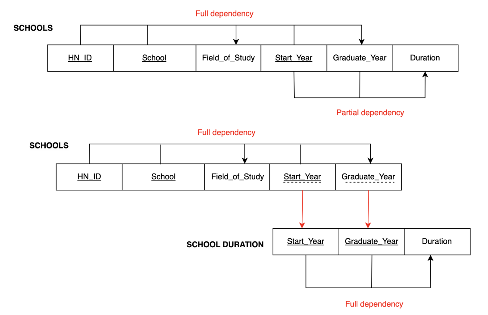

Y Combinator Database
Objectives
Analyze the Y Combinator startup ecosystem to uncover trends in founder backgrounds, industry distributions, geographic regions, and company outcomes—providing strategic insights for investors and accelerators.
Methodology
Created metadata and defined business rules for data creation, updates, and deletion Designed an Entity-Relationship (ER) diagram to model the startup ecosystem Built a relational schema and normalized it to 3rd Normal Form (3NF) Constructed As-is Dependency Diagrams to analyze functional dependencies Wrote and executed MySQL queries to analyze company status, founder backgrounds, regional and industry trends
Data Overview
- Data Source
-
The dataset contains detailed information about companies funded by Y Combinator including founders, industries, regions, and prior experience.
- Metadata - Entities
- Metadata - Attributes
ERD & Relationship

Relational Data Model
As-is Dependency Diagrams

Analysis with SQL
- 1. Company Status Distribution
-
- 71% are active, 12% acquired, less than 1% public, 17% inactive — showing YC’s strong portfolio health.
- 2. Top Industries by Active Companies
-
- Consumer, Fintech, and Healthcare lead in activity.
- 3. Top Sub-Industries by Active Companies
-
- Product & Design and AI are the top sub-industries.
- 4. Top Schools of Founders (Non-Inactive Companies)
-
- Most successful founders come from Stanford, MIT, UC Berkeley, Y Combinator programs, and University of Waterloo.
- 5. Top Regions and Countries with Active Companies
-
- U.S. dominates, but India, UK, and Canada are rising. 58 remote companies reflect a shift to flexible models.
- 6. Top Company Experience Backgrounds Among Founders
-
- Many founders previously worked at Google, Meta, Microsoft, Amazon, Apple, or came from firms like McKinsey and Goldman Sachs.
SELECT
Status,
COUNT(*) AS Count,
ROUND(COUNT(*) * 100.0 / (SELECT COUNT(*) FROM YCombinator.companies), 0) AS Percentage
FROM YCombinator.companies
GROUP BY Status
ORDER BY Count DESC;SELECT Industry, COUNT(companies.Company_ID) AS NoofCompanies
FROM my_schema3.companies
LEFT JOIN my_schema3.industries
ON companies.Company_ID = industries.Company_ID
WHERE Status <> "Inactive"
GROUP BY Industry
ORDER BY NoofCompanies DESC
LIMIT 5;SELECT Sub_Industry, COUNT(companies.Company_ID) AS NoofCompanies
FROM my_schema3.companies
LEFT JOIN my_schema3.industries
ON companies.Company_ID = industries.Company_ID
WHERE Status <> "Inactive"
GROUP BY Sub_Industry
HAVING Sub_Industry <> ""
ORDER BY NoofCompanies DESC
LIMIT 5;SELECT school, COUNT(school) AS cschool
FROM (SELECT school.HN_ID, school.School FROM school
JOIN (SELECT companies.Company_ID, founders.HN_ID, companies.Slug, companies.Status, founders.First_Name, founders.Last_Name
FROM companies
RIGHT JOIN founders ON companies.Slug = founders.Company_Slug
WHERE companies.Status <> 'Inactive'
ORDER BY companies.Company_ID)AS founder_noninactive_t ON school.HN_ID = founder_noninactive_t.HN_ID
ORDER BY HN_ID)AS noninactive_school_t
GROUP BY school
ORDER BY cschool DESC
LIMIT 5;SELECT
CASE WHEN region.Region IS NULL OR region.Region = '' THEN 'Unknown'
ELSE region.Region END AS Region,
CASE WHEN region.Country IS NULL OR region.Country = '' THEN 'Unknown'
ELSE region.Country END AS Country,
COUNT(companies.Company_ID) AS Num_Companies
FROM final_project_schema.region
LEFT JOIN final_project_schema.companies
ON region.Company_ID = companies.Company_ID
WHERE companies.Status <> "Inactive"
GROUP BY Region, Country
ORDER BY Num_Companies DESC
LIMIT 10;SELECT company_experience.Company, COUNT(founders.HN_ID) AS Num_Founders
FROM company_experience
JOIN founders ON company_experience.HN_ID = founders.HN_ID
JOIN (
SELECT companies.Company_ID, companies.Slug
FROM companies
WHERE companies.Status <> 'Inactive'
) AS active_companies ON founders.Company_Slug = active_companies.Slug
GROUP BY company_experience.Company
ORDER BY Num_Founders DESC
LIMIT 10;